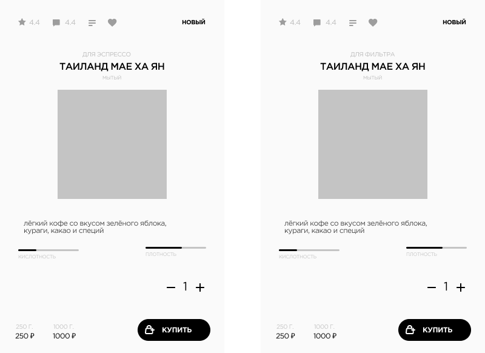
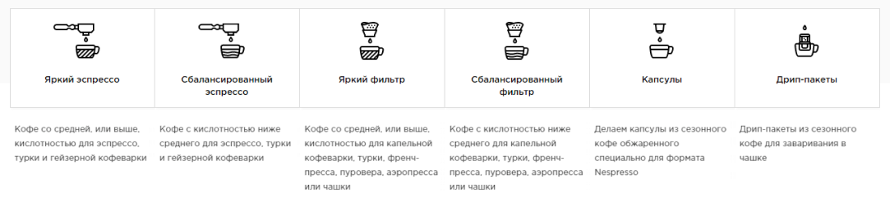
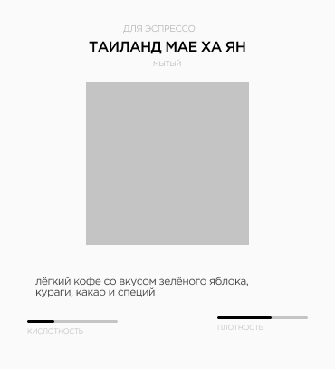
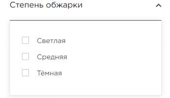

Как выбрать кофе
Наш кофе делится на две основные категории в зависимости от профиля обжарки: для эспрессо и для фильтра. Карточки кофе на сайте визуально обозначают, какой кофе каким способом мы рекомендуем готовить.
Кофе, предназначенный для эспрессо, также отлично подходит для гейзерных кофеварок и турок, а кофе для фильтра идеально раскрывается всеми альтернативными способами заваривания — в капельной кофеварке, френч-прессе, турке, пуровере, аэропрессе или просто чашке.
Чтобы готовить кофе правильно, мы рекомендуем следовать общим рекомендациям по приготовлению, правильно подбирать размер помола и опираться на наши руководства по приготовлению:
-
эспрессо;
-
турка;
-
френч-пресс;
-
пуровер (V60, Hario);
-
кемекс;
-
гейзерная кофеварка(мокка);
-
капельная кофеварка;
-
аэропресс;
-
иммерсионная воронка;
-
чашка.
Чтобы было проще выбрать подходящий кофе, рекомендуем воспользоваться сортировкой:
Плотность и кислотность
Кофе обладает двумя ключевыми характеристиками вкуса — это плотность и кислотность. Чаще всего кофе выбирают именно по ним.
Плотность — это то же самое, что насыщенность. Её степень нужно определить для себя самостоятельно в зависимости от того, насколько насыщенный кофе вы любите.
Кислотность — это одна из важнейших характеристик кофе, но не все к ней готовы. Если вы только знакомитесь со спешелти кофе, мы рекомендуем заказать кофе с разной степенью кислотности: низкой, средней и высокой, и выбрать для себя тот уровень кислотности в кофе, который вам больше всего понравится.
На нашем сайте эти характеристики обозначены в карточке сорта:
Уровень кислотности и плотности, как и вкуса кофе в целом, зависит от восьми факторов:
-
Терруара: климата, качества почвы и высоты произрастания;
-
Вида и разновидности кофе;
-
Способа обработки;
-
Правильности хранения и транспортировки;
-
Цвета и профиля обжарки;
-
Качества воды;
-
Свежести обжарки;
-
Способа и правильности приготовления;
Виды кофе
Основные виды кофе: арабика и робуста. Арабика обладает более сложным вкусом, а робуста содержит больше кофеина и отличается очень высокой плотностью, горечью и отсутствием кислотности. Арабика считается более сложным и вкусным кофе, хотя и у робусты есть свои фанаты.
Цвет обжарки
Существует три основных степени обжарки: светлая, средняя и тёмная. Светлая обжарка подходит для альтернативных способов приготовления: кофе такой обжарки более кислотный и фруктово-ягодный. Тёмная обжарка подходит для приготовления классических капучино и латте и тех, кто любит горчинку в эспрессо. А кофе средней обжарки — это некий баланс: он содержит фруктово-ягодные ноты вместе с ореховыми или карамельными оттенками в аромате.
Степень обжарки можно выбрать в панели фильтра
Как заказать кофе на сайте
Нужно зайти в раздел «кофе», настроить фильтры, исходя из личных вкусовых предпочтений, добавить в корзину выбранный сорт в нужном количестве и оформить заказ: войти в корзину, выбрать способ доставки и оплаты.
После получения заказа важно правильно хранить кофе дома. Кроме того, рекомендуем наш блог, в котором мы регулярно публикуем статьи о кофе.